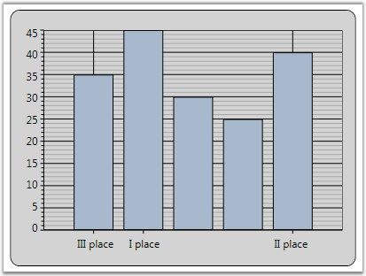
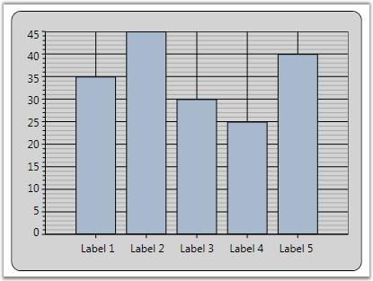

Apart from the default Labels displayed, you can also add Custom Labels to be displayed in the Chart. This section discusses the below topics.
Properties Used to Customize Label Text
The following properties are used to determine the data source for the text of the Labels.
Table 143: ChartAxis Property
|
ChartAxis Property |
Description |
|
LabelsMode |
Auto: content is determined automatically Custom: custom values are used for labels content representation DataSource: external datasource is used for labels content Default: content for labels is either determined automatically, taken from external dataSource or being set with custom values None: labels values are taken from point's X-coordinate |
|
LabelsSource |
gets or sets the Labels Source |
|
PositionPath |
gets or sets the position path |
|
ContentPath |
gets or sets the content path |
By assigning the LabelsMode property to ChartAxis.CustomLabels, you can add Custom Labels to the ChartAxis.
|
[XAML]
<syncfusion:Chart Name="Chart1" > <syncfusion:ChartArea Name="area" > <syncfusion:ChartArea.PrimaryAxis> <syncfusion:ChartAxis LabelsMode="Custom" RangeCalculationMode="AdjustAcrossChartTypes"> <syncfusion:ChartAxis.CustomLabels> <syncfusion:ChartAxisLabel Content="III place" Position="0" /> <syncfusion:ChartAxisLabel Content="I place" Position="1" /> <syncfusion:ChartAxisLabel Content="II place" Position="4" /> </syncfusion:ChartAxis.CustomLabels> </syncfusion:ChartAxis> </syncfusion:ChartArea.PrimaryAxis> </syncfusion:ChartArea> </syncfusion:Chart> |
|
[C#]
// Indicates that the axis labels need to be taken from a custom source. area.PrimaryAxis.LabelsMode = ChartAxisLabelsMode.Custom;
ChartAxisLabel customLabel1 = new ChartAxisLabel(); customLabel1.Content = "III place"; customLabel1.Position = 0;
ChartAxisLabel customLabel2 = new ChartAxisLabel(); customLabel2.Content = "I place"; customLabel2.Position = 1;
ChartAxisLabel customLabel3 = new ChartAxisLabel(); customLabel3.Content = "II place"; customLabel3.Position = 4;
// Adding custom label to labels collection. area.PrimaryAxis.CustomLabels.Add(customLabel1); area.PrimaryAxis.CustomLabels.Add(customLabel2); area.PrimaryAxis.CustomLabels.Add(customLabel3); |
The following screenshot illustrates Chart PrimaryAxis with Custom Labels.

Figure 209: Chart PrimaryAxis with Custom Labels
Labels from Data Source
The following code snippet illustrates how Custom Labels can be used in the ChartAxis.
|
[C#]
// Indicates that the axis labels need to be taken from a data source. area.PrimaryAxis.LabelsMode = ChartAxisLabelsMode.DataSource;
// Creates DataSource with desired labels. List<object> labels = new List<object>(); for (double i = 1; i < 6; i++) { labels.Add(new { Position = i, Content = "Label " + i.ToString() }); }
// Associates DataSource with the Chart Labels. area.PrimaryAxis.LabelsSource = labels; // Set the position path where the labels should be placed. area.PrimaryAxis.PositionPath = "Position"; // Set the content path from which labels are to be taken. area.PrimaryAxis.ContentPath = "Content"; |
The following screenshot illustrates Chart PrimaryAxis with Labels from Data Source.

Figure 210: Chart PrimaryAxis with Labels from Data Source